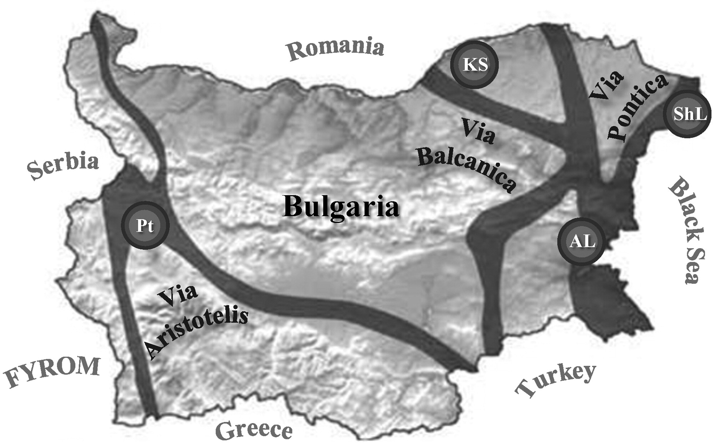

Виа Аристотелис

Виа Аристотелис e главен маршрут на миграция на птиците от Европа към Африка минаващ през Западна България и
вторият по численост на мигриращите птици след Виа Понтика. Този път е описан още в древността от Аристотел и
това е причината днес да бъде наречен на негово име. Според него по поречието на Струма се изтегляли на юг
пеликаните, докато през Виа Понтика отлитали жеравите. Пътят свързва Дунав с Бяло море,
като започва от северозападния ъгъл на страната във Видинска област, минава през Врачанския Балкан, от там през
Искърското дефиле пресича Стара планина и се спуска до Софийското поле. Оттук по долината на река Струма достига
до Бяло море. Често като клон на Виа Аристотелис се сочи и поречието на река Места. По миграционния път
преминават около 50 вида птици. По поречието на река Струма
по време на сезонните миграции се наблюдава особено струпване на птици в районите на Рупелски, Кресненски,
Орановски, Бобошевски, Земенски пролом. Тук те намират пoдходящи условия за почивка и намиране на храна, която
дава възможност прелетните птици да възстановят силите си.